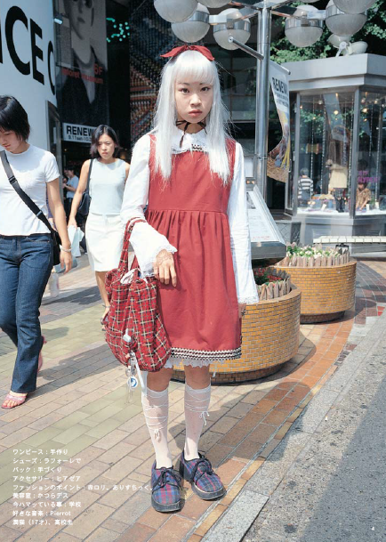

GALL
マチュアモデルの使用もFruitsの雑誌の影響を受けています。Fruitsによって普及させられた原宿スタイルは、世界中のデザイナーやファッションアイコンに影響を与え続けています。本文
4:Fruitsの雑誌は、原宿スタイルファッションを普及させるだけでなく、美容やファッションに関する伝統的な枠組みを打ち破り、多様性や自己表現を促進しました。Fruitsの雑誌によって描かれる原宿スタイルは、ファッション業界においてより包括的で受け入れられる文化を作り上げました。結論:結論として、Fruits雑誌は、写真家の青木祥一によって創刊され、原宿スタイルファッションを世界に広める上で欠かせない役割を果たし、現在もファッション界に影響を与え続けています。雑誌の独特なエスニックは原宿スタイルに説得力とリレーショナリティを与え、ファッション業界においてより包括的で受け入れられる文化を作り上げました。だから次に誰かが遊び心に溢れ、異所性に富み、驚異的な格好をしているのを見たら、Fruitsから始まったことを覚えておいてください。
Fruitsの雑誌の影響は、今日にもファッション界に感じられます。「kawaii」ファッションの持続的な人気、衣服に使用される明るい色や大胆な柄など、Fruitsの雑誌は持久的な遺産を残しています。ファッション写真におけるア
